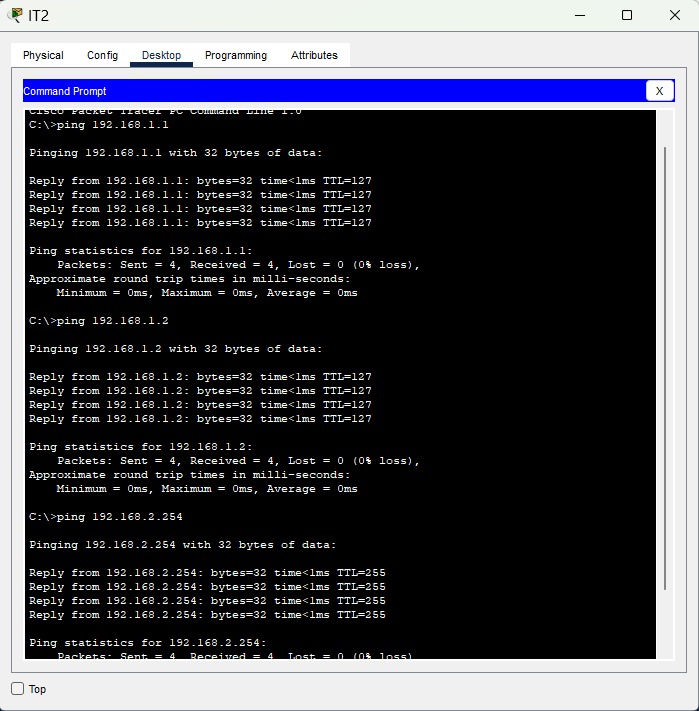

Creating a Network Simulation with Inter-VLAN routing (router-on-a-stick)
First off, you have to understand why this excites me.
I started learning networking concepts at the beginning of March. I had ZERO prior IT knowledge, just messed with computers from time to time. I was extremely intimidated by the content, but I wanted a career change. I decided I would study for the CompTIA Network+. I studied every day for hours, sometimes feeling discouraged, but pushed through. I began to put pieces of the networking puzzle together little by little and slowly gained confidence. Here and there, some tough concepts made me slow down, but every day I have put in work, because I want to become a SOC analyst. I decided that if I wanted to do security, I needed to understand what I was securing.
Fast forward to now, April 11th, 5 weeks of intense studying, note-taking, and quizzing myself, digesting concepts. I have finally hit a major goal for myself, which was setting up a network topology that used VLANs and inter-VLAN routing. I remember when just learning what a VLAN was confused me. Today, I used Cisco packet tracer and successfully set up a fully-connected network that demonstrates inter-VLAN routing!
In just 5 weeks of intense study, I went from knowing nothing to configuring a working network with VLAN routing and I actually understand the concepts. I issued myself a challenge, and figured it out!
So what did I do here? Have a look at my pictures below:

Here, I issued myself a challenge so I could learn this.

My final, working network topology complete with labels.

Successful ping connections from every machine. Above, I ping every device and assure connectivity!
THE OVERVIEW:
- Created 2 departments with 2 workstations each, HR and IT, and decided on a network address for each department. Connected all machines to the switch and assigned some static IPs
- Connected the switch port to the router and configured the switch port as a trunk port - important for VLANs!
- Created 2 separate VLANS (VLAN 10 and VLAN20) to represent the 2 segments of the network
- Configured 2 router sub-interfaces to receive traffic from each VLAN, G0/0.10 and G0/0.20
- Assigned each machine the proper default gateway according to their VLAN
- Tested connectivity to all machines using the "ping" command - verified connection
Done! I am really proud of my progress. 5 weeks ago, I couldn't even really tell you what a router did. Today, I'm simulating connected networks using real Cisco commands!